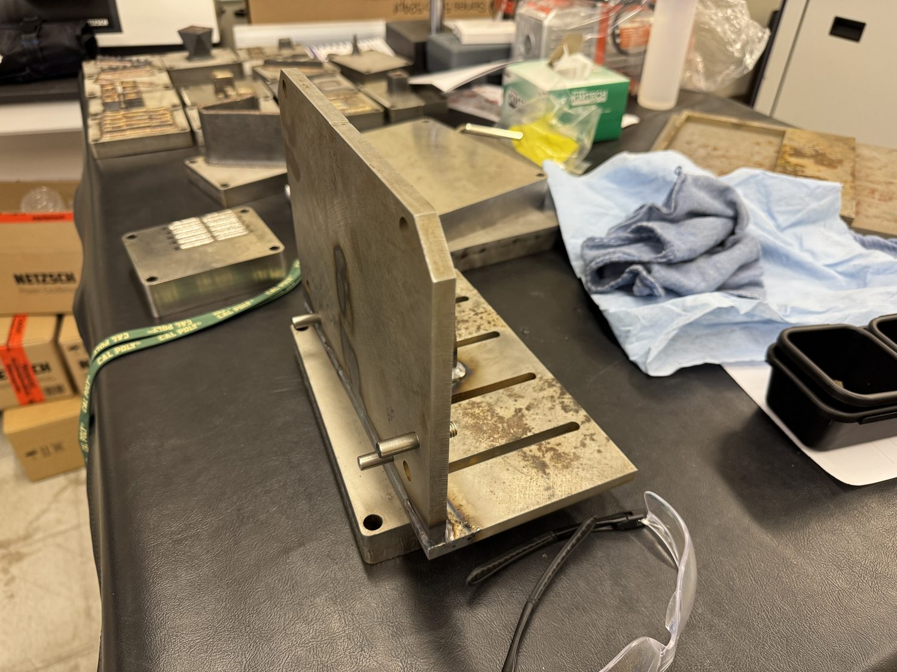

Timeline
Project Development
As part of additive manufacturing research at the Cal Poly AFRL, printed metal parts need reliable post-processing after SLM or DED builds. One common step is removing parts from the baseplate, where Wire EDM can part off the workpiece accurately. I designed and planned a dedicated fixture so baseplate removal setups can be more repeatable, easier to qualify, and more reliable across future prints.

-
March 2026
Sourcing and Design for Manufacturability
I secured unused steel plate material from the IME department and designed the fixture around standard threaded locating pins, baseplate size, and manufacturing variability.
- Fixture must locate and support the baseplate reliably.
- Designed clearance and hole strategy around expected fabrication tolerances.
- Planned the manufacturing sequence before cutting material.
-
April 2026
Waterjet Steel Plate Profiles
After designing the fixture in SolidWorks, I cut the steel plate profiles on the waterjet to bring the parts near final shape.
- Waterjet profiles established the rough geometry for the fixture plates.
- Plate holes were left undersized so the Wire EDM could qualify final size and location.
-
May 2026
Wire EDM Qualification of Mounting Holes
Using the pre-made holes as starting geometry, I programmed the Wire EDM to cut the mounting holes to the required size and location.
- Used Mastercam to program the WEDM operation.
- Qualified critical hole geometry after rough profiling.
-
May 2026
Weld and Assembly of Plates
I fixtured and welded the plates together with help from an instructor, aiming to minimize datum warpage during assembly.
- Welded the rib, mounting plate, and vertical plate into the fixture assembly.
- Managed the assembly sequence around repeatability and datum stability.